สไลด์ชุดนี้ (15 หน้า เป็นภาพ infographic ทั้งหมด) พาสำรวจ "ภูมิทัศน์" ของเครือข่ายคอมพิวเตอร์ ตั้งแต่อุปกรณ์ส่วนตัวรอบตัวเรา ไปจนถึงโครงสร้างพื้นฐานระดับโลก
ใช้ ขนาดของเครือข่าย (PAN → LAN → MAN → WAN → Internet) เป็นแกน แล้วยกตัวอย่างเครือข่ายจริง 6 แบบ พร้อมกลไกเบื้องหลัง (NAT, VLAN, Handover)
เป็นส่วนเสริมของ Chapter 1 (หัวข้อ Network model & topology ในสัปดาห์ที่ 1) — ช่วยให้เห็นว่า "network of networks" หน้าตาเป็นอย่างไรในชีวิตจริง
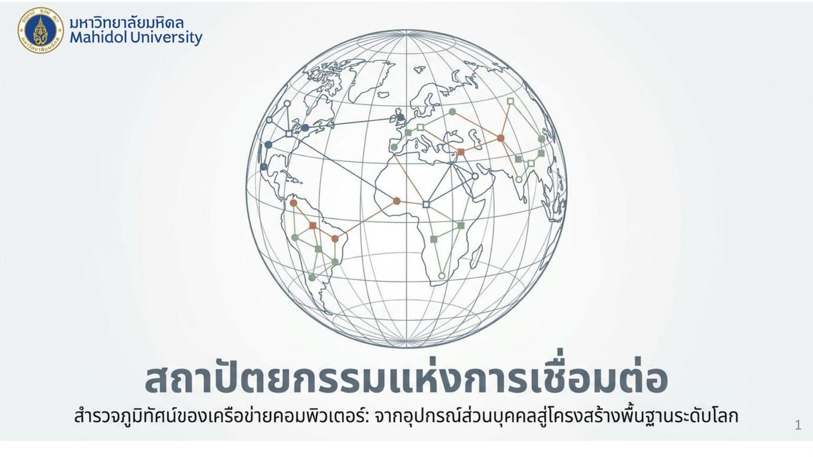
1. เครือข่ายของเครือข่าย (The Internetwork)
อินเทอร์เน็ตไม่ใช่เครือข่ายเดียว แต่คือ "เครือข่ายที่เชื่อมต่อเครือข่ายเข้าด้วยกัน"
ภาพแสดงเครือข่ายหลายแบบที่ต่อเข้าหา โครงข่ายหลัก (Global ISP / backbone) ตรงกลาง:
- เครือข่ายระดับภูมิภาค — บ้าน คอมพิวเตอร์ อุปกรณ์ในพื้นที่
- เครือข่ายองค์กร — กลุ่มเซิร์ฟเวอร์และเครื่องลูกข่ายจำนวนมาก
- เครือข่ายมือถือ — เสาสัญญาณและสมาร์ทโฟน
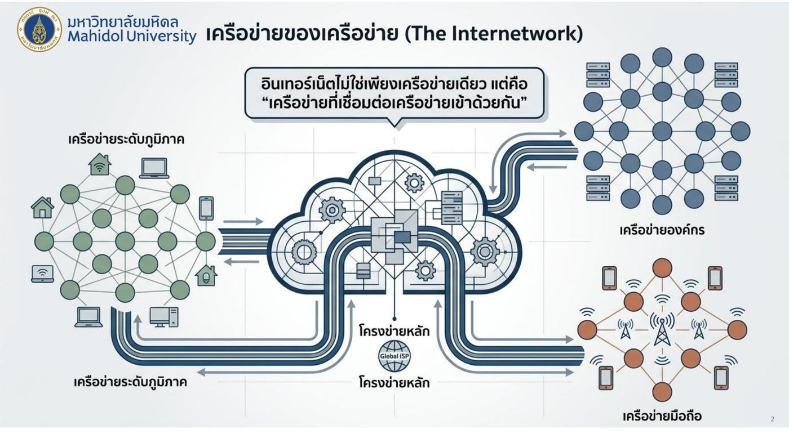
💡 เหมือนระบบถนน: ซอยในหมู่บ้าน ถนนในนิคมอุตสาหกรรม และถนนในเมือง ต่างมีเจ้าของและรูปแบบของตัวเอง แต่ทุกสายไปเชื่อมกับทางหลวงสายหลัก จึงขับจากที่ไหนไปที่ไหนก็ได้
2. มาตรวัดขนาดของเครือข่าย ⭐
| ระยะห่าง | พื้นที่ครอบคลุม | ประเภทเครือข่าย | เทคโนโลยีตัวอย่าง |
|---|---|---|---|
| 1 เมตร | พื้นที่ส่วนบุคคล | PAN (Personal Area Network) | Bluetooth |
| 10 ม. – 1 กม. | ห้อง / อาคาร / วิทยาเขต | LAN (Local Area Network) | Ethernet, WiFi |
| 10 กม. | เมือง | MAN (Metropolitan Area Network) | Cable, 802.16 |
| 100 กม.+ | ประเทศ / ทวีป | WAN (Wide Area Network) | Optical Backbone, 5G |
| 10,000 กม. | โลก | The Internet | TCP/IP |
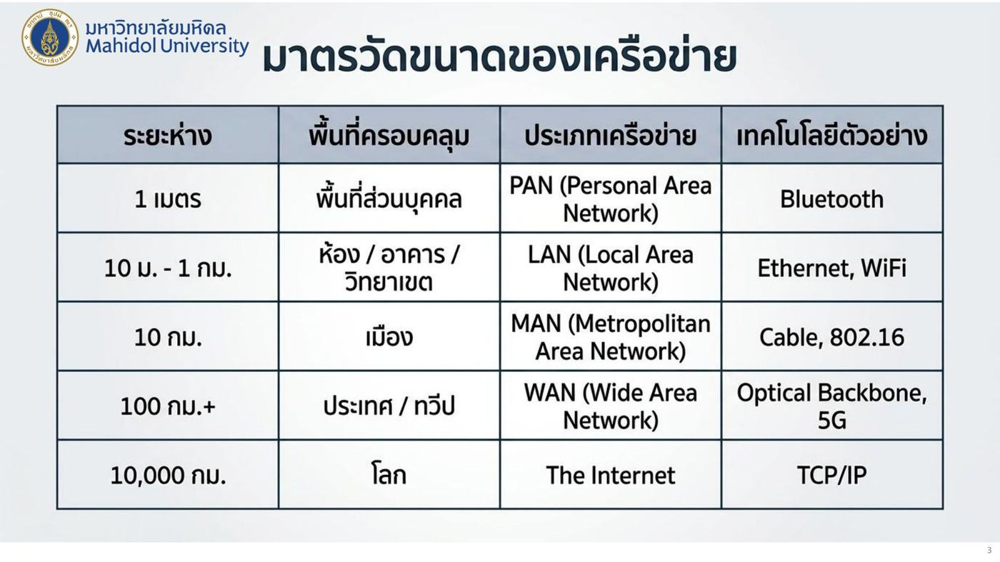
💡 จำจากเล็กไปใหญ่: Personal → Local → Metropolitan → Wide → Internet = ตัวเรา → ตึก → เมือง → ประเทศ → โลก
⚠️ 802.16 = WiMAX (มาตรฐานไร้สายระดับเมือง) อย่าสับสนกับ 802.11 (WiFi, ระดับ LAN)
3. ตัวอย่างที่ 1: เครือข่ายส่วนบุคคล (PAN)
นิยาม: เครือข่ายไร้สาย ระยะสั้นรอบตัวบุคคล
โครงสร้าง (แบบ master-slave):
- Master device (เช่น สมาร์ทโฟน) — ควบคุมการเชื่อมต่อและจัดสรรความถี่
- Slave devices (เช่น หูฟังไร้สาย, นาฬิกาอัจฉริยะ, เครื่องเสียงในรถ) — อุปกรณ์ต่อพ่วงที่เชื่อมต่อแบบ Piconet
- Technology: Bluetooth — ตัดปัญหาสายสัญญาณทับซ้อน (ใช้แทนสาย)
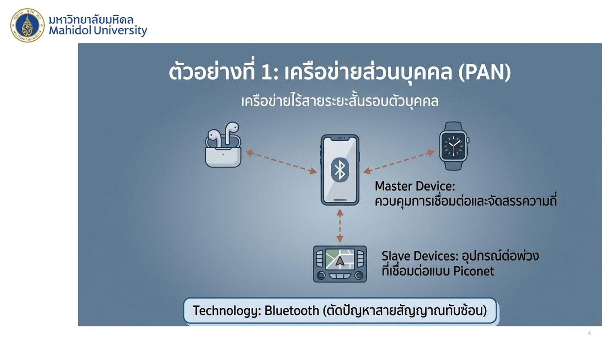
💡 Piconet = เครือข่ายเล็ก ๆ ที่มี master 1 ตัวคุม slave หลายตัว เหมือนหัวหน้าห้องที่เรียกชื่อให้เพื่อนพูดทีละคน จึงไม่พูดชนกัน
4. ตัวอย่างที่ 2: เครือข่ายในที่พักอาศัย (Home Access Networks)
การหลอมรวมของอุปกรณ์หลากหลายประเภทในพื้นที่อยู่อาศัย
| องค์ประกอบ | หน้าที่ |
|---|---|
| DSL/Cable modem | เชื่อมโยงบ้านเข้ากับ ISP |
| Gateway | เราเตอร์หลักที่เชื่อมโยงบ้านเข้ากับ ISP |
| Convergence | รองรับทั้งข้อมูลแบบ Elastic (เว็บเพจ — รอได้ ปรับความเร็วได้) และ Time-Sensitive (สตรีมมิ่งวิดีโอ — ต้องทันเวลา) |
| IoT Integration | เซ็นเซอร์และเครื่องใช้ไฟฟ้าที่ต้องการความเสถียร |
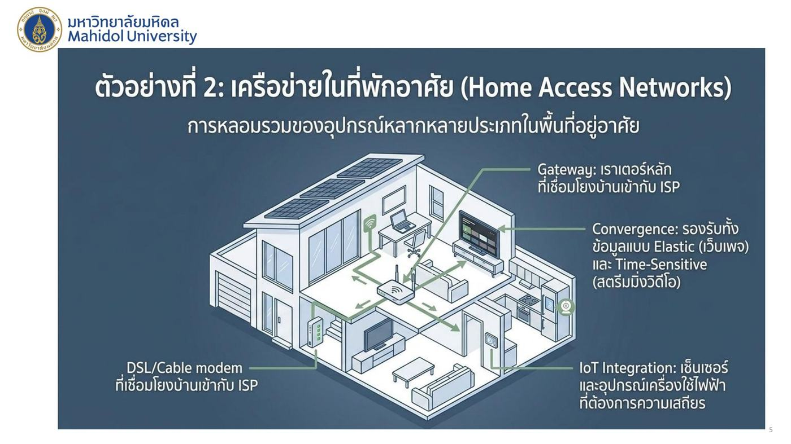
⚠️ Elastic vs Time-sensitive: เว็บโหลดช้าไป 1 วินาทีไม่เป็นไร (elastic) แต่วิดีโอคอลกระตุก 1 วินาทีใช้ไม่ได้ (time-sensitive)
กลไกเบื้องหลัง: Network Address Translation (NAT) ⭐
ปัญหา: อุปกรณ์ในบ้านมีหลายเครื่อง แต่ ISP ให้ IP สาธารณะมาแค่ 1 ตัว
การทำงาน:
- เครือข่ายส่วนตัว — อุปกรณ์ในบ้านใช้ IP ภายใน เช่น laptop
10.0.0.1, มือถือ10.0.0.2, แท็บเล็ต10.0.0.3→ IP ภายในมีความหมายแค่ในบ้าน - NAT Router — ทำหน้าที่ แปลงที่อยู่ (เหมือนกรวยรวมทุกเครื่องเข้าทางเดียว)
- อินเทอร์เน็ตสาธารณะ — ออกไปด้วย IP สาธารณะเดียว
138.76.29.7→ ใช้ IP เดียวเป็นตัวแทนของทั้งบ้าน
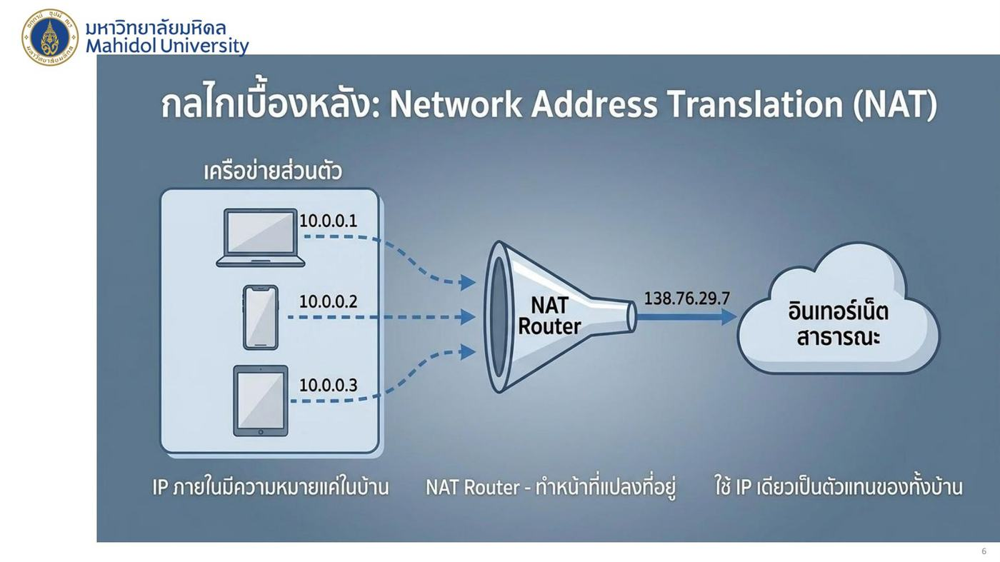
💡 เหมือนคอนโดที่มีที่อยู่ไปรษณีย์เดียว จดหมายขาออกจากทุกห้องใช้ที่อยู่คอนโด แล้วนิติบุคคล (NAT router) จำไว้ว่าจดหมายตอบกลับต้องส่งเข้าห้องไหน
5. ตัวอย่างที่ 3: เครือข่ายองค์กร (Enterprise LAN)
โครงสร้างพื้นฐานแบบมีสายความเร็วสูงสำหรับองค์กร — เป็นลำดับชั้น (hierarchical):
- Institutional Router (บนสุด) — ต่อองค์กรออกอินเทอร์เน็ต
- Core/Edge Switches (ชั้นกลาง) — กระจายไปแต่ละส่วน
- End Systems (ล่างสุด) — Workstations และ Servers
จุดเด่น:
- Link-Layer Switches: ขจัดปัญหาการชนกันของข้อมูล โดยส่งเฟรมข้อมูลแยกตามพอร์ตอย่างอิสระ
- High Throughput: รองรับความเร็วระดับ 1 Gbps ถึง 10 Gbps
- Resource Sharing: แชร์ข้อมูลและเซิร์ฟเวอร์ส่วนกลางอย่างมีประสิทธิภาพ
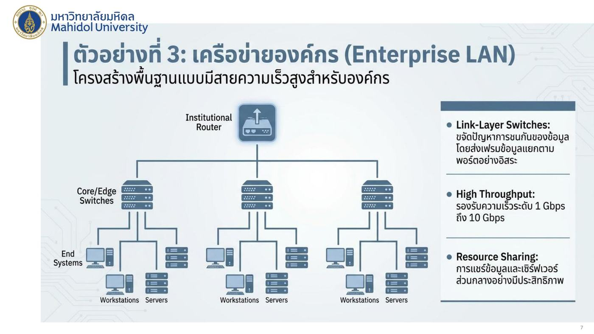
วิวัฒนาการของ LAN: Virtual LANs (VLAN) ⭐
| Physical (แบบเดิม) | Logical (VLAN) |
|---|---|
| ข้อจำกัดทางภูมิศาสตร์: การจัดกลุ่มถูกกำหนดโดย สายเคเบิล (เครื่องที่ต่อ switch เดียวกันก็อยู่กลุ่มเดียวกัน) | นิยามใหม่ด้วยซอฟต์แวร์: จัดกลุ่มเครือข่าย ตามแผนกหรือความปลอดภัย ไม่ใช่ตามชั้นของอาคาร |
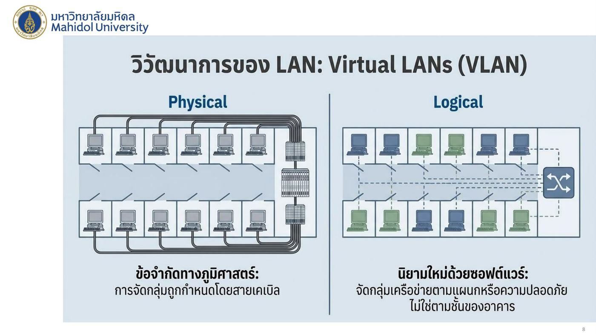
💡 ตัวอย่าง: ฝ่ายบัญชีอยู่ชั้น 2 และชั้น 5 — แบบ physical ต้องเดินสายใหม่ แต่ VLAN ตั้งค่าใน switch ให้เป็นกลุ่มเดียวกันได้เลย (รายละเอียดอยู่ใน Lecture 7 VLAN)
6. ตัวอย่างที่ 4: เครือข่ายไร้สาย (WiFi / 802.11)
| Infrastructure Mode | Ad-hoc Mode |
|---|---|
| อุปกรณ์ไร้สายสื่อสาร ผ่าน Access Point (Base Station) ที่เชื่อมต่อกับอินเทอร์เน็ตแบบมีสาย (wired network) | อุปกรณ์สื่อสารกัน เองโดยตรง ไม่ต้องใช้โครงสร้างพื้นฐาน |
| เช่น WiFi บ้าน/ออฟฟิศ | เช่น แชร์ไฟล์ระหว่างเครื่องโดยตรง |
- Bandwidth: แชร์ช่องสัญญาณวิทยุร่วมกัน ภายในรัศมี (ยิ่งคนใช้เยอะ ยิ่งแบ่งกันเยอะ)
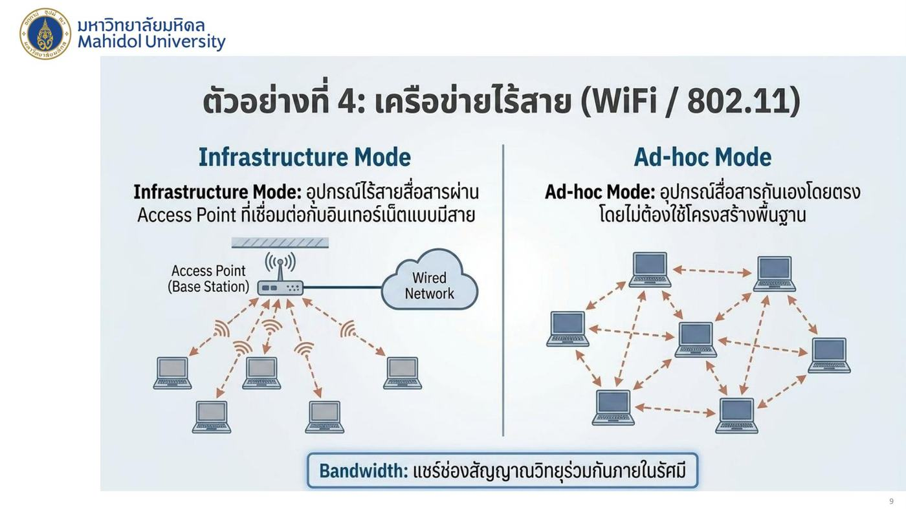
7. ตัวอย่างที่ 5: เครือข่ายมือถือ (Cellular 4G/5G)
เครือข่ายไร้สายระยะไกลที่ครอบคลุมระดับประเทศ — พื้นที่ถูกแบ่งเป็น เซลล์รูปหกเหลี่ยม (cells)
| องค์ประกอบ | หน้าที่ |
|---|---|
| Mobile Device (UE — User Equipment) | อุปกรณ์เคลื่อนที่ ซึ่ง มีรหัสยืนยันตัวตนผ่านซิมการ์ด |
| Base Station (eNode-B) | เสาสัญญาณที่ บริหารจัดการทรัพยากรคลื่นวิทยุในพื้นที่เซลล์ |
| Core Network | ศูนย์กลางการจัดการข้อมูลและการเคลื่อนที่ ของผู้ใช้งาน |
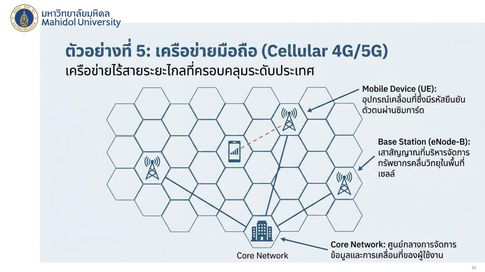
กลไกเบื้องหลัง: Mobility & Handover ⭐
เมื่อผู้ใช้ (เช่น รถที่กำลังวิ่ง) เคลื่อนจากเซลล์หนึ่งไปอีกเซลล์:
- Step 1: Association — อุปกรณ์เชื่อมต่อกับเสาสัญญาณปัจจุบัน (Tower A ใน Hexagon A)
- Step 2: Coordination — ระบบ ประเมินความแรงสัญญาณ และเตรียมโอนย้าย (รถอยู่รอยต่อ A กับ B)
- Step 3: Handover — ส่งมอบการเชื่อมต่อไปยังเสาสัญญาณใหม่ (Tower B) โดยไม่ทำให้การดาวน์โหลดสะดุด
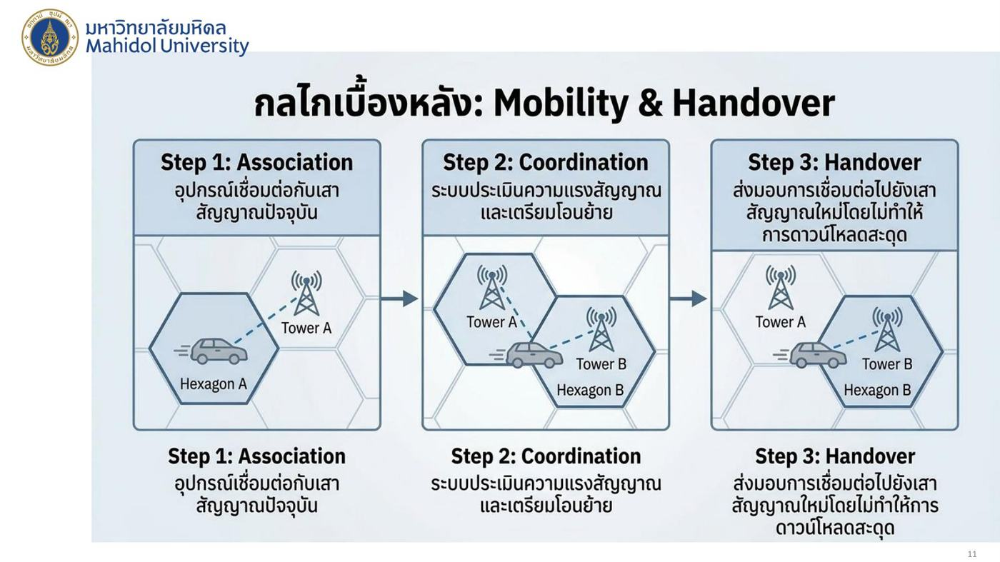
💡 เหมือนวิ่งผลัด: ไม้ถูกส่งต่อจากคนหนึ่งไปอีกคนขณะวิ่ง โดยไม่ต้องหยุดการแข่งขัน
8. ตัวอย่างที่ 6: เครือข่ายศูนย์ข้อมูล (Data Center / The Cloud)
โครงสร้างพื้นฐานขนาดใหญ่เบื้องหลังบริการคลาวด์และสตรีมมิ่ง
โครงสร้างเป็นชั้น:
- Internet (บนสุด)
- Core Routers
- Edge Switches (เชื่อมกับ core routers แบบไขว้กันหนาแน่น)
- Server Racks (ล่างสุด)
| คุณสมบัติ | ความหมาย |
|---|---|
| Massive Scale | เชื่อมต่อโฮสต์ หลายหมื่นเครื่อง ภายในศูนย์ข้อมูลเดียว |
| Load Balancing | กระจายภาระงาน อย่างชาญฉลาด เพื่อไม่ให้เซิร์ฟเวอร์ใดทำงานหนักเกินไป |
| Purpose | ประมวลผลแบบขนานและให้บริการเนื้อหา (เช่น Netflix, Google) |
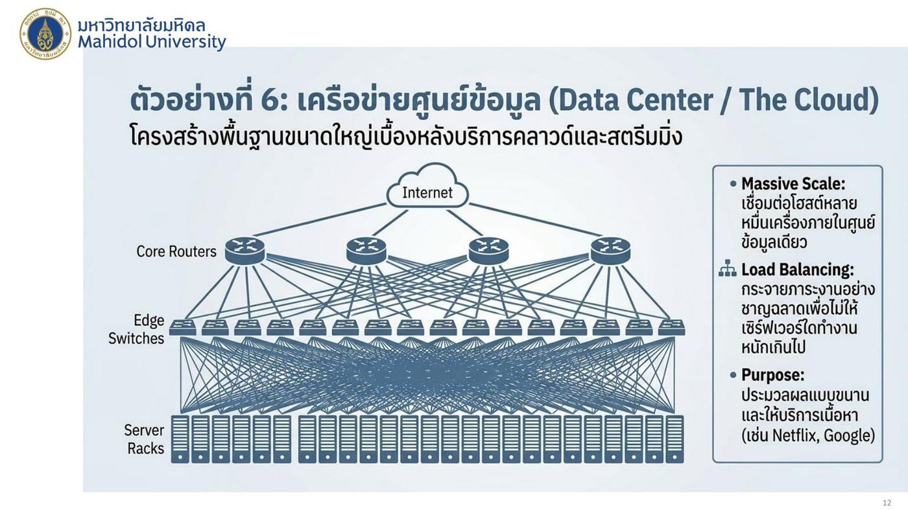
9. สรุปเปรียบเทียบ: Wired vs Wireless Architecture ⭐
| สถาปัตยกรรมแบบมีสาย (Wired) | สถาปัตยกรรมแบบไร้สาย (Wireless) | |
|---|---|---|
| ตัวกลาง (Medium) | สายทองแดง / เคเบิลใยแก้วนำแสง | คลื่นวิทยุ (Radio Spectrum) |
| การจัดการข้อมูล (Collision Mgt.) | ใช้ สวิตช์แยกช่องสัญญาณ ป้องกันการชนกันของข้อมูล | ใช้สื่อกลางร่วมกัน ต้องมีกลไก หลีกเลี่ยง การชน |
| ความคล่องตัว (Mobility) | อุปกรณ์อยู่กับที่ (stationary devices) | รองรับอุปกรณ์เคลื่อนที่และการโอนย้าย |
| เทคโนโลยีตัวอย่าง | Ethernet, Fiber Backbone | WiFi (802.11), 4G/5G, Bluetooth |
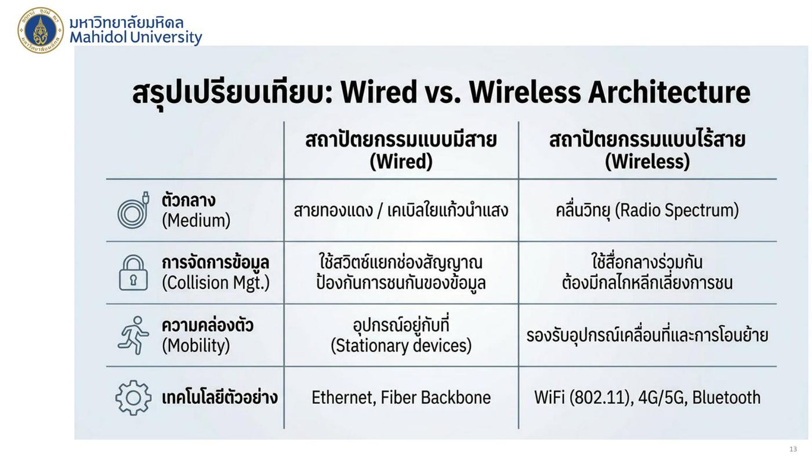
10. วิถีแห่งข้อมูล: A Day in the Life of a Packet
เมื่อคุณกดสตรีมภาพยนตร์ 1 เรื่อง ข้อมูลเดินทางผ่านเครือข่ายอะไรบ้าง?
- Step 1 (PAN/Mobile): สมาร์ทโฟนส่งคำขอผ่านสัญญาณ 5G
- Step 2 (Cellular Edge): Base Station รับสัญญาณและส่งเข้าโครงข่ายหลัก
- Step 3 (Global WAN): ข้อมูลเดินทางข้ามประเทศผ่าน Optical Backbone (ผ่าน router)
- Step 4 (Data Center): Load Balancer ส่งคำขอไปยังเซิร์ฟเวอร์ที่เก็บภาพยนตร์
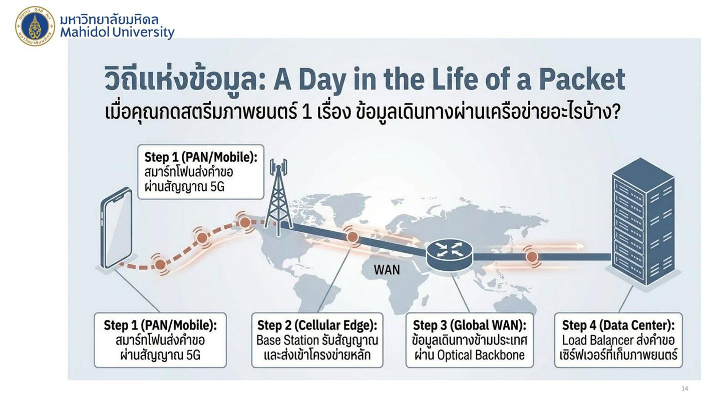
11. The Network of Networks (สรุปปิดท้าย)
วงกลมซ้อนกันจากในสุดออกนอก: PAN (1m) → LAN/Home (10m–1km) → MAN/Cellular (10km) → WAN/Internet (Global)
- เครือข่ายมีหลากหลายขนาดและบริบท แต่ละประเภทถูกออกแบบมาเพื่อแก้ปัญหาเฉพาะทาง
- จาก 1 เมตรถึง 10,000 กิโลเมตร ทุกเครือข่ายสื่อสารกันได้ผ่าน โปรโตคอลมาตรฐาน
- การหลอมรวมของเทคโนโลยีเหล่านี้คือสถาปัตยกรรมที่ขับเคลื่อนโลกดิจิทัลในปัจจุบัน
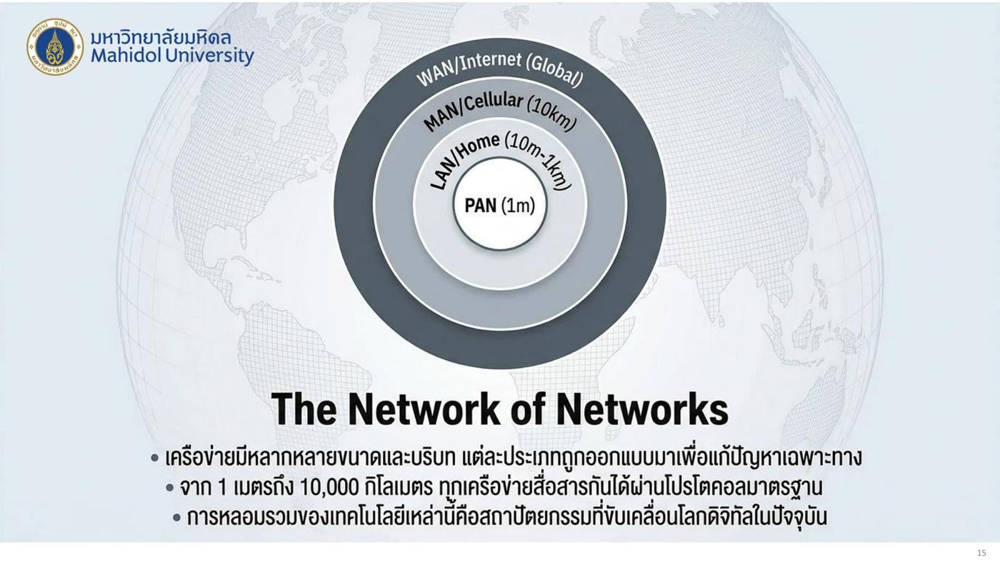
12. คำศัพท์สำคัญ
| คำศัพท์ | ความหมาย | จำง่าย ๆ ว่า |
|---|---|---|
| Internetwork | เครือข่ายที่เชื่อมเครือข่ายหลายแบบเข้าด้วยกัน | ถนนหลายสายต่อทางหลวง |
| PAN | เครือข่ายส่วนบุคคล ~1 m (Bluetooth) | รอบตัว |
| LAN | เครือข่ายท้องถิ่น 10 m–1 km (Ethernet, WiFi) | ในตึก |
| MAN | เครือข่ายระดับเมือง ~10 km (Cable, 802.16) | ในเมือง |
| WAN | เครือข่ายระยะไกล 100 km+ (Optical backbone, 5G) | ข้ามประเทศ |
| Master / Slave device | ตัวคุมการเชื่อมต่อ / อุปกรณ์ต่อพ่วง ใน Bluetooth | |
| Piconet | เครือข่าย Bluetooth ขนาดเล็ก 1 master หลาย slave | |
| Gateway | เราเตอร์หลักที่ต่อบ้านเข้ากับ ISP | ประตูบ้าน |
| Convergence | รวมข้อมูล elastic และ time-sensitive บนเครือข่ายเดียว | |
| Elastic / Time-sensitive | รอได้ (เว็บ) / ต้องทันเวลา (สตรีม) | |
| NAT | แปลง IP ภายในหลายตัวเป็น IP สาธารณะตัวเดียว | ที่อยู่คอนโด |
| Enterprise LAN | เครือข่ายองค์กรแบบมีสาย ลำดับชั้น router → switch → end systems | |
| VLAN | จัดกลุ่ม LAN ด้วยซอฟต์แวร์ตามแผนก ไม่ใช่ตามสาย | |
| Infrastructure mode | WiFi ผ่าน Access Point | |
| Ad-hoc mode | WiFi คุยกันตรงไม่ผ่าน AP | |
| UE | User Equipment อุปกรณ์มือถือ ยืนยันตัวด้วย SIM | |
| eNode-B | Base station ของ 4G จัดการคลื่นในเซลล์ | เสา |
| Core Network | ศูนย์กลางจัดการข้อมูลและการเคลื่อนที่ | |
| Handover | ส่งต่อการเชื่อมต่อไปเสาใหม่โดยไม่สะดุด | วิ่งผลัด |
| Load Balancing | กระจายภาระงานไปหลายเซิร์ฟเวอร์ |
13. สรุปท้ายบท / จุดที่มักออกสอบ
- อินเทอร์เน็ต = เครือข่ายที่เชื่อมเครือข่ายเข้าด้วยกัน (ภูมิภาค, องค์กร, มือถือ ต่อเข้าโครงข่ายหลัก)
- ตารางขนาดเครือข่าย: PAN 1 m Bluetooth / LAN 10 m–1 km Ethernet, WiFi / MAN 10 km Cable, 802.16 / WAN 100 km+ Optical backbone, 5G / Internet 10,000 km TCP/IP
- PAN: master คุมการเชื่อมต่อและความถี่, slave ต่อแบบ Piconet, ใช้ Bluetooth
- Home network: modem + gateway, convergence ของ elastic และ time-sensitive, IoT
- NAT: IP ภายใน (เช่น 10.0.0.x) มีความหมายแค่ในบ้าน → NAT router แปลงเป็น IP สาธารณะเดียว (เช่น 138.76.29.7)
- Enterprise LAN: link-layer switches ขจัด collision, 1–10 Gbps, resource sharing
- VLAN: physical = กลุ่มตามสาย / logical = กลุ่มตามแผนกหรือความปลอดภัยด้วยซอฟต์แวร์
- WiFi: infrastructure mode (ผ่าน AP) vs ad-hoc mode (คุยตรง); แชร์ bandwidth ในรัศมี
- Cellular: UE (SIM), eNode-B (จัดการคลื่นในเซลล์), core network (จัดการข้อมูลและ mobility)
- Handover 3 ขั้น: Association → Coordination → Handover (ไม่สะดุด)
- Data center: core routers → edge switches → server racks; massive scale, load balancing
- Wired vs Wireless: สื่อกลาง, collision (switch แยกช่อง vs หลีกเลี่ยงการชน), mobility, ตัวอย่างเทคโนโลยี
- Packet journey 4 ขั้น: 5G → base station → optical backbone WAN → load balancer ใน data center